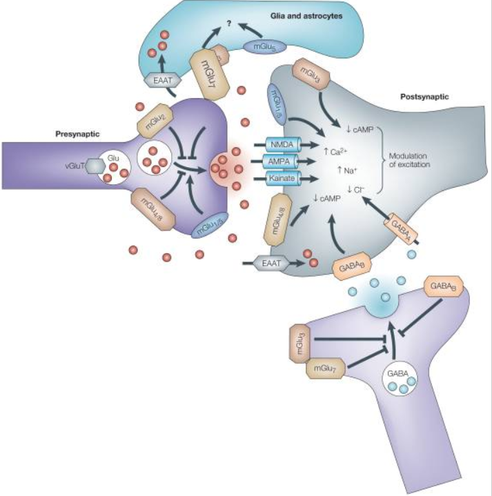
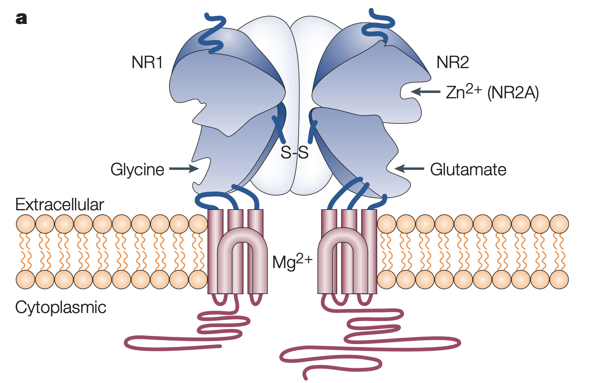
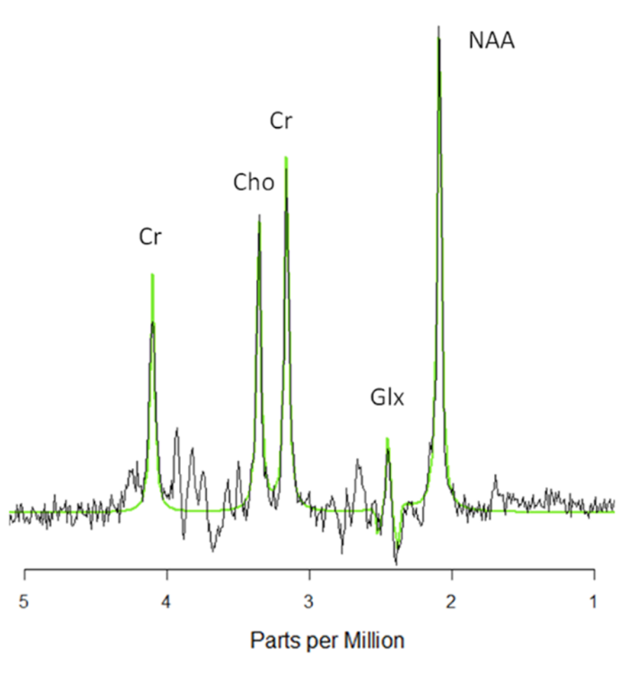

17 글루타메이트 가설
Glutamate Hypothesis
17.1 글루타메이트 신호전달
글루타메이트는 중추신경계의 대표적인 흥분성 신경전달물질로서, 뇌에서 일어나는 신호전달의 90% 이상을 담당하고 있다. 이러한 중요성에도 불구하고, 신경전달물질로서의 정체가 명확히 규명된 것은 도파민, 세로토닌보다도 늦은 1984년에 이르러서였다.[1] 글루타메이트는 그 자체가 신경전달물질일 뿐 아니라, 대표적인 억제성 신경전달물질인 GABA의 전구물질이기도 하며, 둘은 서로 상보적으로 작용하여 신호전달의 균형을 이룬다.
글루타메이트 수용체는 AMPA/kinate과 NMDA 수용체라 불리우는 이온채널을 비롯하여, G 단백질과 결합되어 있는 metabotropic 수용체로 나뉜다.(그림 17.1) 통상적인 정보전달 이외에도, NMDA 수용체를 통한 신호전달을 중심으로 하여 학습/기억에 핵심적인 역할을 하기 때문에 다양한 정신질환과 관련해서 연구되었다.

17.2 글루타메이트 가설
17.2.1 가설의 탄생
도파민 가설이 조현병의 양성 증상을 설명하기 위해 등장하였다면, 글루타메이트 가설은 음성/인지 증상을 설명하기 위해 등장했다고 해도 과언이 아니다. 신경발달학적 가설과 신경퇴행적 가설이 점점 더 영향력을 얻어가면서, 연구자들의 관심은 신경연결망의 형성과 유지 그리고 붕괴에 쏠리기 시작하였다. 조현병 환자는 발병 초반부터 뇌실질의 위축이 관찰되고, 만성화, 황폐화 정도에 따라 이러한 위축이 점점 더 심해지는 소견을 보인다. 따라서 연결망이 애초에 만들어질 때부터 문제가 있을 뿐더러, 출생 후에도 이를 유지하고 상황에 맞게 변형시키는데 어려움을 겪을 것이라 예상되었다.
이와 더불어 1970년대 마취 보조제로 도입된 ketamine1과 phencyclidine (PCP)2은 특징적으로 조현병 유사 증상을 유발했는데, 암페타민 유발 정신증과는 달리, 음성/인지 증상에 해당되는 증상도 일으킬 수 있었다.[4] 때문에 암페타민이나 LSD 복용 후 정신 증상을 일으켜 병원을 찾은 환자들에 대해선 의사들이 쉽게 감별진단을 할 수 있었던 것에 비해, PCP/ketamine 복용 후 방문한 환자들에게는 대부분 조현병 진단이 내려졌다.[5] 또한 실제 조현병 환자가 PCP를 복용하면, 기존의 증상이 훨씬 악화되는 현상을 보였다.[6]
1 Ketamine: 1962년에 합성된 마취제. 원래 동물 마취 및 치과용 마취에 사용되었다. 강력한 진통작용과 함께 환각을 일으킨다. 환자는 표면적으로는 의식이 있는 것처럼 보이지만, 나중에 과정을 기억하지 못하기 때문에 해리성 마취제로도 불리운다. 미다졸람, 프로포폴과 함께 가장 많이 사용되는 수면마취제이지만, 남용 위험이 높으며 과량 투여 시 심혈관계 불안정으로 사망할 수 있다.
2 Phencyclidine: 소위 angel dust로 불리우는 환각제이다. 1926년에 합성되어 마취제로 사용되었지만 남용 위험이 워낙 높아 ketamine으로 대체되었다. PCP 중독 환자가 나중에 조현병으로 발병하는 비율은 26% 정도로 대마초보다는 낮지만, 필로폰, 코카인 보다는 상당히 높다.[3]
Ketamine과 PCP가 결합하는 부위가 NMDA 수용체라는 글루타메이트 수용체의 하나라는 것은 1980년대 초가 되서야 밝혀졌다. 두 약물은 NMDA의 비경쟁적 길항제이기 때문에, NMDA 신호전달을 원천적으로 차단해버린다. NMDA 수용체는 세가지 서로 다른 종류의 아단위(subunit)가 복합체를 이룬 형태로 구성되며, 그 내부에는 글리신, D-serine, glutathione, spermine 등 다양한 조절물질이 결합하는 부위가 있다.(그림 17.2)[5]

글루타메이트 가설이 최초로 등장한 것은 1980년이다. 근거는 조현병 환자의 뇌척수액에서 글루타메이트 농도가 떨어진다는 것과, 쥐에 암페타민을 투여하면 역시 뇌척수액의 글루타메이트가 감소한다는 것이었다. 이에 연구자들은 글루타메이트 신경세포의 기능 부전 혹은 퇴행이 조현병의 원인이라고 생각하였다.[8,9] 당시에는 이러한 결과가 타 연구진에 의해 재현되지 않않기 때문에 그다지 관심을 받지 못하였다. 그러던 중 몇년 후 Javitt은 조현병의 PCP 모델이 암페타민 모델보다 더욱 조현병을 설명하는데 유용하다고 주장하면서, 글루타메이트 가설을 본격적으로 회자시킨다.[10,11] 한문장으로 요약하여, 글루타메이트 신호전달 특히 NMDA 수용체를 통한 신호전달이 제대로 이루어지지 않으면 조현병의 제반 증상이 출현한다는 것이다. NMDA 수용체가 기능을 하지 못하면 시냅스의 생성, 유지에 곤란을 겪을 것이다. 게다가 NMDA 수용체를 통한 신호전달은 전전두엽이 피질하 도파민 활성을 조절하는 주요 기전이므로(6-6절 참조), 피질 하 도파민 활성의 부적절한 증가가 초래될 수 있다.
항 NMDA 수용체 자가항체에 의한 뇌염(Anti-NMDA receptor encephalitis) 역시 글루타메이트 가설을 뒷받침하는 증거이다.(섹션 12.4.3) 이는 자가면역 질환의 하나로, 급격한 정신병적 증상을 일으키며, 또 순수한 조현병 환자 중에도 일부 항 NMDA 수용체 자가항체가 발견된다. 이러한 증거들은 적어도 조현병 환자 중 일부는 NMDA 수용체 기능 저하때문에 증상이 지속되고 있음을 시사해준다.
17.2.2 유전적 증거
조현병의 신경발달학적 가설에서는 유전적 요인 혹은 주산기 감염과 같은 환경적 요인이 정상적인 신경발달 과정을 방해한다고 가정한다. 그런데 뉴런과 뉴런 사이에 시냅스가 형성되고, 그것이 점점 강화되어 자리를 잡기 위해선 NMDA를 통한 신경가소성 과정이 절대적으로 중요하다. 따라서 신경발달을 방해하는 유전적 요인이 글루타메이트와 관련되어 있을 것이라 예상하는 것은 상당한 개연성이 있다. 2014년 Schizophrenia Psychiatric GWAS Consortium에서 발표한 광범위 유전체 연합 연구(GWAS, 섹션 8.5) 결과를 살펴보면, 엄격한 기준으로 선택된 100여개 정도의 조현병 취약성 유전자에 GRM3, GRIN2A, SRR, GRIA1, CLCN3, SLC38A7, RIMS1, CACNB2, CACNA1C 등 글루타메이트 수용체 발현 유전자가 포함되어 있다.[12]
Ketamine을 투여하면 NMDA 수용체가 차단되고, 이에 대한 반작용으로 뇌 일부분에서 글루타메이트 농도가 증가한다. 이에 비해 조현병 환자들은 유의한 정도로 변연계, 기저핵, 시상 등에서 글루타메이트의 농도가 항시 증가되어 있다.[13] 이러한 글루타메이트 활성의 증가는 해마 용적의 감소와 더불어 집행 기능 결함과도 상관관계에 놓여있다.[14] Bustillo 등[15]은 GWAS 결과에서 선정된 글루타메이트 관련 취약성 유전자들을 이용하여 다유전자 위험 점수(polygenic risk scoring, 섹션 8.6)를 계산한 후 이를 뇌 내 글루타메이트 활성과 비교하였다. 그 결과 둘 사이의 유의한 양의 상관관계를 찾아내었다.
이와 더불어 부모로부터 물려받은 변이는 아니지만, 생식 세포 복제 과정에서 생기는 변이인 드 노보 변이(de novo mutation, 섹션 9.1)가 NMDA 수용체에 생겼을 때 조현병이 발생할 위험이 크게 높아진다고 한다. 이는 주로 유전자 복제수 변이(CNV, 섹션 10.2)를 이용하여 조사되었는데, 시냅스의 밀도와 기능에 관계하는 유전자들의 복제수와 발병 위험간의 연관성이 발견되었다.[16,17]
17.3 글루타메이트 신호전달의 병태생리
17.3.1 NMDA 수용체 기능 부전
그러나 NMDA 수용체 기능 부전이 정확히 어떤 식으로 조현병을 일으키는 지는 알려져 있지 않다. 뇌 전역을 아우르는 신경 진동(neural oscillation)은 글루타메이트 활성과 GABA 활성의 섬세한 균형에 의해 유지된다. parvalbumin을 발현하며, GABA를 분비하는 사이뉴런에는 NMDA 수용체가 높은 농도로 분포한다. 이들 수용체가 기능을 하지 못하면 사이뉴런의 활성이 떨어져 글루타메이트/GABA의 균형이 깨지며, 감마 밴드 진동에 문제가 생긴다.(섹션 13.5)[18] 감마 밴드 진동은 뇌의 각 영역이 주어진 과업을 수행하기 위해 동조되는데 중요한 역할을 하기 때문에, 이 진동이 깨지면 조현병 환자의 특징적인 인지과업 수행 저하가 발생할 수 있다.
NMDA 수용체의 문제는 도파민 활성을 높일 수도 낮출 수도 있다. 전술한 바와 같이 GABA 분비 사이뉴런의 활성이 떨어지면, 도파민의 탈억제가 일어나 피질하 도파민 활성이 증가할 수 있다. 역으로 조현병 환자들은 NMDA 기능 부전에 대한 보상작용으로 글루타메이트 농도가 증가되어 있기 때문에, GABA 분비 사이뉴런을 지나치게 자극하여 중피질계 경로에서의 도파민 분비를 저하시킬 수도 있다.[19] 더군다나 NMDA를 통한 신호전달은 세로토닌에 의해서도 조절을 받고 있기 때문에, 더더욱 어느 한 방향으로 고정되어 움직인다고 말하기 어렵다.[20]
최근에는 신경발달과정에서 NMDA 수용체가 담당하는 중요성을 강조하는 methylazoxymethanol acetate (MAM) 모델3이 등장하였다.(섹션 30.1.2.1)[21] 임신한 지 17일 된 쥐에게 MAM을 주사하면, 태어난 생쥐가 성인이 되었을 때 조현병과 유사한 다양한 신경생학적, 생리학적, 해부학적, 행동적 이상을 보인다는 모델이다. MAM을 투여받은 산모에게서 태어난 쥐는 NMDA 수용체 아단위에 구조적 이상이 발견되며, 이는 도파민 과활성이나 인지장애가 나타나기 이전부터 시작된다.[22] 이 결과는 NMDA 수용체 이상과 이에 따른 시냅스 구조 결함이 추후에 부상하는 도파민 활성 이상의 원인이 될 수 있음을 시사한다. 더욱 흥미로운 것은 MAM 모델 쥐에게 대사성 글루타메이트 수용체 효현제인 LY379268를 청소년 시기에게 투여하면 NMDA 수용체 기능저하와 인지기능 저하를 예방할 수 있었던 반면, 성인기에 투여하면 아무런 효과가 없었다는 점이다.[23]
3 Methylazoxymethanol acetate (MAM): 식물에서 발견되는 신경독소로 신경아세포에 주로 작용하며, DNA를 알킬화하여 복제를 방해한다. 착상 후 17일째 되는 쥐의 배아에 MAM을 투여한 후 태어난 쥐는, 조현병과 흡사한 행동적, 해부학적 변화를 보이기 때문에 조현병의 동물모델로 사용된다.
17.3.2 흥분성 독성
앞절까지는 글루타메이트 신호전달이 원할하지 않아 생기는 문제만을 살펴보았다. 그러나 보상 작용에 의해 뇌의 일부 영역에 글루타메이트 농도가 증가되어 있다는 것은 그 자체로 또 다른 문제를 일으킬 수 있으며, 그 대표적인 예가 흥분성 독성(excitotoxicity)이다. 흥분성 독성이란 신경전달물질의 종류를 막론하고 과다한 신호전달이 전해질 때 일어나지만, 가장 대표적인 예는 NMDA 수용체를 통한 흥분성 독성(excitotoxicity)이다. 1950년대 중반부터 동물에게 과량의 글루타메이트를 투여하면 경련발작을 일으키며, 특정 신경세포층이 파괴된다는 것이 알려져 왔다. 1969년 Olney는 이 현상에 대해 흥분성 독성이라는 이름을 붙였으며, 이 현상은 글루타메이트 수용체가 있는 시냅스 후 뉴런에 국한된다는 것도 확인하였다.[24]

뇌 내에 글루타메이트가 증가되어 있다는 것은 1H‐MRS4를 이용하여 입증할 수 있다. 뇌 내의 일부 저분자량 화합물들은 독특한 MR shift spectrum을 갖고 있기 때문에 1H‐MRS를 이용하면 생체 내에서 각 화합물의 농도를 측정할 수 있다. 그러나 MR shift spectrum이 근접한 물질들은 서로 구분하기 어려운데, 그렇기 때문에 글루타메이트, 글루타민(glutamine), GABA, 글루타치온(glutathione)은 함께 측정되며 이를 합쳐 Glx (glutamine-glutamate-GABA complex)라고 부른다.(그림 17.3) Merritt 등[13]이 행한 메타 연구에서 조현병 환자는 대조군에 비해 기저핵, 시상, 내측 측두엽 등에서 유의하게 Glx가 높아져 있었다. 적어도 대조군에 비해 Glx가 감소되어 있는 뇌 영역은 한 군데도 찾을 수 없었다. 보상성으로 글루타메이트 농도가 높아지는 과정에도 GABA 분비 사이뉴런이 관여한다. NMDA 수용체가 막혀 사이뉴런의 활성이 떨어지면, 시냅스 후 피라미드 뉴런의 탈억제가 일어나고, 여기서 글루타메이트 분비가 증가한다. 이 피라미드 뉴런은 동시에 복측 피개의 도파민 분비 세포에도 연접하여 도파민 분비를 증가시킨다.
4 양성자 자기공명분광(proton magnetic resonance spectroscopy, 1H‐MRS): 양성자는 그 회전방향에 따라 서로 다른 에너지 준위를 보이는데, 이를 스핀(spin)이라 한다. 양성자가 MRI 기계와 같은 강력한 자장 내에 놓이면 에너지를 흡수하면서 스핀 방향이 바뀐다. 이 때 다수의 양성자가 동일한 뱡향으로 정렬하는 현상이 나타나는데 이를 핵자기공명(nuclear magnetic resonance)이라고 한다. 한편 양성자가 포함되어 있는 분자의 구조에 따라 공명을 일으키는 에너지 파장이 조금씩 달라지므로, 특정 파장에서 공명을 일으킨다면 이에 대응하는 분자가 존재한다는 뜻이며, 그 세기는 분자의 양에 비례한다. 이 성질을 이용하면 생체 조직에 개개 분자들이 상대적으로 얼마만큼씩 존재하는지 정량화할 수 있다.
NMDA 수용체 전달이 차단되어 신경가소성이 방해를 받으면서 시냅스 연결이 줄어들고 시냅스 농도가 낮아져서 조현병에서 보이는 신경연결망의 잠식이 일어난다. 그러나 글루타메이트 자체의 독성때문에도 희소돌기 아교세포와 신경세포가 사멸하는 등 구조적 변화가 생길 수 있다. 신경세포가 어떻게든 사멸만은 면한다 해도, 전자가 죽어나가기 시작하면 미엘린 수초가 현저하게 줄어들고 백질의 연결성(white matter integrity)이 붕괴되기 시작한다.(섹션 11.2.2)
글루타메이트의 농도가 지나치게 높아지면 신경세포의 기능장애나 사멸이 일어날 수 있다. NMDA 수용체를 포함하여 AMPA 수용체등 글루타메이트 친화성 이온 채널은 모두 Ca2+ 채널이다. 지나친 탈분극으로 Ca2+이 세포내에 유입되면 세포막에 위치한 Ca2+ 들이 무리하게 작동을 해야만 하며 이때 엄청나게 많은 양의 ATP를 소모한다.
흥분성 독성의 정확한 기전은 아직도 연구중이나, 크게 세가지 기전을 통할 것으로 예상된다.[26] 우선 지나친 탈분극에 의해 급격히 유입되는 Na+, Cl-, Ca2+ 등 이온들을, 세포밖으로 배출하는 펌프의 역량이 따라가지 못하게 되면, 삼투압이 높아지면서 세포막이 터지게 된다.[27] 둘째 Ca2+ 농도가 상승하면 calcineurin, calpain, caspase 등의 효소가 활성화되는데, 이들은 세포자멸사([섹션 #sec-neurophil])를 유도하는 대표적인 효소들이다.[28] 셋째, 세포질 내에 축적된 Ca2+은 미토콘드리아로 내부로도 침투하게 되는데, 가뜩이나 이온 펌프 작동을 ATP를 과도하게 생성하고 있는 중이라 반응성 산소종5 등 다양한 산화물질이 걷잡을 수 없이 생성된다. 세포 내 항산화 효소가 이들을 중화하는데 실패하면, 단백질, 핵산 등의 구조가 변성되면서 미토콘드리아는 ATP 생성을 더 이상 하지 못하게 된다. 에너지를 생성해내지 못하는 세포는 Ca2+을 세포 밖으로 뽑아내지 못하며, 세포 내 상황은 더욱 악화된다.[29]
5 반응성 산소종 (reactive oxygen species): 세포 내에서 생성되는 산소 원자의 화합물로 생체 조직을 공격하고 세포를 손상시키는 산화력이 강한 산소이다. 짝지어지지 않고 자유롭게 존재하는 전자 때문에 반응성이 매우 높다. 세포 대사과정에서 저절로 생기기도 하고, 자외선이나 열 등 스트레스에 의해 생기기도 한다. 세포 내에는 산소의 침투를 방어하는 항산화 기전 역시 갖추고 있다.
세포 밖 상황도 마찬가지로 어려워진다. 신호전달을 마친 글루타메이트는 글루타메이트 수송체(glutamate transporter)를 통하여 근방의 교세포 등으로 재흡수된다. 그러나 ATP 생성 부진으로 수송체가 제 역할을 발휘하지 못하면, 재흡수 되지 못하고 시냅스 간극에 머무르게 된 글루타메이트가 반복해서 NMDA 수용체를 자극한다.[30]
이렇듯 글루타메이트 신호전달이 일정한 역치를 넘어서면 악순환에 빠지면서 신경 세포가 제대로 기능을 못하고 자멸사가 유도된다. 이상의 기전은 조현병 뿐 아니라, 허혈성 뇌졸중, 헌팅턴 병, 파킨슨 병 및 알츠하이머 치매에서도 뱔견되는 현상으로, 조현병의 신경퇴행가설을 설명할 때 중점적으로 논의되고 있다.
17.4 치료적 함의
글루타메이트 가설은 조현병 환자의 신경퇴행 현상을 설명할 뿐 아니라, D2 수용체 차단제를 넘어서서 새로운 약물을 개발하는데 견인차 역할을 하였다. NMDA 수용체라는 명칭의 기원이된 NMDA (N-methyl-D-aspartate)를 효현제로서 투여해볼 수도 있겠으나, 이는 흥분성 독성을 일으킬 위험이 높다. 따라서 초창기에 시도되었던 약물은 NMDA 수용체에 결합하여 다른 자리 입체성 조절(allosteric modulation)6을 행하는 D-serine과 글리신(glycine)이었다.
6 다른 자리 입체성 조절제 (allosteric modulator): 효소는 기질이 직접 달라 붙는 결합 부위(binding site)외에도 기질이 아닌 또 다른 물질들이 결합할 수 있는 조절 자리(allosteric site)를 갖고 있다. 조절 자리에 리간드가 붙으면, 전체적 3차원 구조가 변하면서 기질이 결합 부위에 붙는 것을 촉진할 수도 있고, 방해할 수도 있는데, 이를 다른 자리 입체성 조절이라고 하며,그 리간드를 다른 자리 입체성 조절제라고 한다.
두 물질은 모두 NMDA 수용체 내부의 특정 부위에 결합하여 글루타메이트 간의 결합력을 증가시킨다. D-serine과 유사한 D-cycloserine은 원래 결핵약으로 개발되었는데, NMDA의 부분효현제로서 작용한다. 1990년대 중반부터 이들 물질은 항정신병 약물과 병용투여하여 음성증상을 개선해보고자 하는 임상 시험이 진행되었다.[31,32] 당시만 해도 상당히 고무적인 결과가 얻어졌고, 틀에 박힌 항정신병 약물 개발의 틀에서 벗어날 수 있다는 흥분으로 말미암아, 많은 연구자들이 이 분야에 파고들었다. 1990년대 중반부터 약 10여년간 집중적으로 연구가 이어졌으나, 이 시기에 얻어진 결과는 그다지 희망적이지 못하였다.[33] 대체로 음성, 인지 증상에 도움이 된다는 연구가 많았으나, 효과 크기는 크지 않았으며, 역설적으로 클로자핀과 병용 투여하면 오히려 양성 증상이 악화된다는 보고도 있었다.[34] 이러한 논란을 잠재우고자, Buchanan 등[35]은 다기관이 참여하는 대형 연구인 The Cognitive and Negative Symptoms in Schizophrenia Trial (CONSIST)을 진행하였다. 이중맹검 무작위 배정으로 16주간 glicine, D-cycloserine 그리고 위약을 비교했던 이 연구에서 배정약물은 음성/인지 증상 개선에 아무런 효과를 보이지 못하였다. 이로써 지난 10여년간의 흥분과 기대는 금새 사그러들게 되었다.
그러나 글루타메이트 가설을 기초로 한 신약 개발은 근근히 이어졌다. 위에 언급한 약물 이외에도 글루타메이트 활성을 조절하는 다양한 경로를 차단/자극하는 약물이 개발되었다. Sarcosine은 글리신의 재흡수를 담당하는 글리신 수송체(glycine transporter, GlyT‐1) 차단제이며, 글리신의 농도를 높여준다.[5] 또 다른 GlyT‐1 차단제인 bitopertin은 3상 임상시험까지 진행되었으나 효과 부족으로 중도에 탈락하였다. N-acetyl-cysteine (NAC)은 아미노산인 L-cysteine의 전구물질이며, L-cysteine의 산회되면 L-cystine이 된다. 후자는 글리신의 역수송체(glycine antiporter)의 활성을 조절하며, 몇 단계를 거쳐 뉴런의 글루타메이트 분비를 감소시킨다.[36] Sodium benzoate은 D-serine을 분해하는 DAAO7 효소의 억제제이다.[5]
7 D-amino acid oxidase (DAAO): D-amino acid는 암모니아 기와 맞닿아있는 탄소의 이성질 방향이 D-configuration인 아미노산을 의미하며, 대표적으로 D-aspartic acid와 D-serine이 있다. DAAO는 이들을 분해하여 단백질 대사에 기여하는데, 특히 D-serine을 분해한다.
AMPA, NMDA 수용체 뿐 아니라 대사성 글루타메이트 수용체 관련여부도 활발히 연구되었다. 대사성 수용체 효현제인 pomaglumetad methionil (POM)은 아직 별다른 성과를 보이지 못하고 있으나 활발히 연구가 진행중이다.[37] Phosphodiesterase (PDE)는 글루타메이트가 수용체에 결합하고 난 이후의 신호전달을 조절하는 효소이다. 따라서 이를 차단하면 지나치게 상승된 글루타메이트의 효과를 무마할 수 있다. PDE는 무려 11개의 아형이 있으며, 그 각각이 조현병을 비롯한 다양한 정신질환에서 차지하는 역할을 규명하려는 연구가 활발히 진행되고 있다.[38] 새롭게 개발되는 조현병 치료제로서는 Rolipram, BI 409306, roflumilast 등이 임상 시험 중에 있다.[39–41]